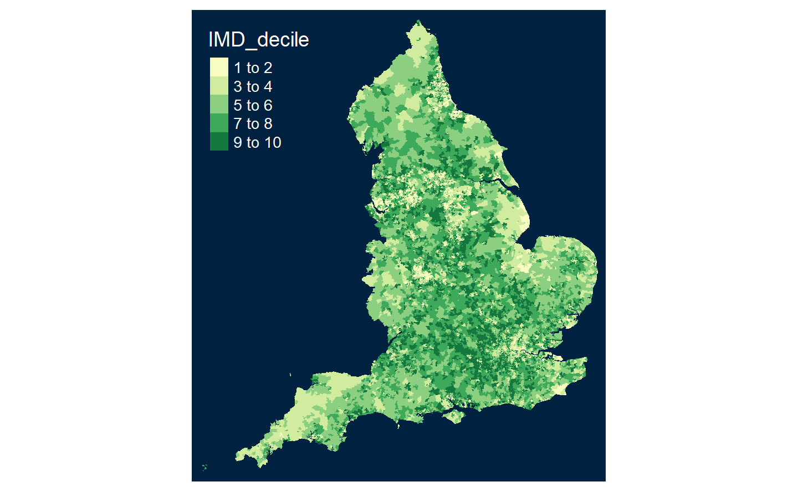

6 Appendix
In this section I’ll show and explain the code to create the map. For this map I used some shapefiles coming from https://borders.ukdataservice.ac.uk/ukborders/easy_download/prebuilt/shape/England_lsoa_2011_sgen_clipped.zip we are using the full file without any reduction which gives the most precision in the output.
I first load the datas from the IMD and tidy them again, since the code is coming before the data section I need to do this otherwise there would be an issue.
#check appendix to understand the code
IMD <-
read.csv(here::here("data/Domains_of_Deprivation_by_LSOA.csv"))
IMD <- as_tibble(IMD)
IMD <- IMD %>%
rename(
LSOA_code = ï..LSOA.code..2011.,
LSOA_name = LSOA.name..2011.,
IMD_rank = Index.of.Multiple.Deprivation..IMD..Rank..where.1.is.most.deprived.,
IMD_decile = Index.of.Multiple.Deprivation..IMD..Decile..where.1.is.most.deprived.10..of.LSOAs.,
Income_rank = Income.Rank..where.1.is.most.deprived.,
Income_decile = Income.Decile..where.1.is.most.deprived.10..of.LSOAs.,
Employment_rank = Employment.Rank..where.1.is.most.deprived.,
Employment_decile = Employment.Decile..where.1.is.most.deprived.10..of.LSOAs.,
Crime_rank = Crime.Rank..where.1.is.most.deprived.,
Crime_decile = Crime.Decile..where.1.is.most.deprived.10..of.LSOAs.,
Living_Environment_rank = Living.Environment.Rank..where.1.is.most.deprived.,
Living_Environment_Decile = Living.Environment.Decile..where.1.is.most.deprived.10..of.LSOAs.,
Health_Deprivation_rank = Health.Deprivation.and.Disability.Rank..where.1.is.most.deprived.,
Health_Deprivation_decile = Health.Deprivation.and.Disability.Decile..where.1.is.most.deprived.10..of.LSOAs.,
Local_Authority_Name = Local.Authority.District.name..2019.,
Skill_rank = Education..Skills.and.Training.Rank..where.1.is.most.deprived.,
Skill_decile = Education..Skills.and.Training.Decile..where.1.is.most.deprived.10..of.LSOAs.,
Barrier_to_Housing_Rank = Barriers.to.Housing.and.Services.Rank..where.1.is.most.deprived.,
Barrier_to_Housing_Decile = Barriers.to.Housing.and.Services.Decile..where.1.is.most.deprived.10..of.LSOAs.,
Local_Authority_code = Local.Authority.District.code..2019.
)
IMD_tidy <- IMD %>%
select(
LSOA_code,
LSOA_name,
IMD_rank,
IMD_decile,
Income_rank,
Income_decile,
Employment_rank,
Employment_decile,
Crime_rank,
Crime_decile,
Health_Deprivation_rank,
Health_Deprivation_decile,
Skill_rank,
Skill_decile
)%>%
#deleting spaces to avoir creation of NA for the next part
mutate(IMD_rank = gsub(" ", "", IMD_rank),
IMD_decile = gsub(" ", "", IMD_decile),
Income_rank = gsub(" ", "", Income_rank),
Income_decile = gsub(" ", "", Income_decile),
Employment_rank = gsub(" ", "", Employment_rank),
Employment_decile = gsub(" ", "", Employment_decile),
Crime_rank = gsub(" ", "", Crime_rank),
Crime_decile = gsub(" ", "", Crime_decile),
Health_Deprivation_rank = gsub(" ", "", Health_Deprivation_rank),
Health_Deprivation_decile = gsub(" ", "", Health_Deprivation_decile),
Skill_rank = gsub(" ", "", Skill_rank),
Skill_decile = gsub(" ", "", Skill_decile)
)%>%
#transforming numbers into the right class, from character to integers
mutate(
IMD_rank = as.integer(IMD_rank),
IMD_decile = as.integer(IMD_decile),
Income_rank= as.integer(Income_rank),
Income_decile = as.integer(Income_decile),
Employment_rank = as.integer(Employment_rank),
Employment_decile = as.integer(Employment_decile),
Crime_rank = as.integer(Crime_rank),
Crime_decile = as.integer(Crime_decile),
Health_Deprivation_rank = as.integer(Health_Deprivation_rank),
Health_Deprivation_decile = as.integer(Health_Deprivation_decile),
Skill_rank = as.integer(Skill_rank),
Skill_decile = as.integer(Skill_decile)
)Once the Data is tidy, I need to select only what I will truly be using therefore I am taking only the code and the IMD_decile from the table since those are the only things needed to respectively link the table and then fill the map to visualize the data.
IMD_map <- IMD_tidy %>%
rename(code = LSOA_code)%>%
select(code,
IMD_decile)%>%
mutate(code = gsub(" ", "", code))Once the data is ready we need to use 2 new libraries, SF which is used to read and manipulate the shapefile and tmap which will be use to create the map:
Once the libraries are loaded we will use the function st_read from the sf package to read the shapefile which will enable us to work with it:
Now that we are able to work with the shapefile, we are going to join the IMD table that we tidied earlier on to be able to plot latter:
Then we add the styling we want for the map by using tmap_style:
And finally we use the qtm function that is doing a “Quick Thematic Map Plot” for us: and we have our nice map done.

At first I wanted to add the tmap_mode("view") function that should make the plot interactive but it seems that it does not work with what I have done, not surre about why.